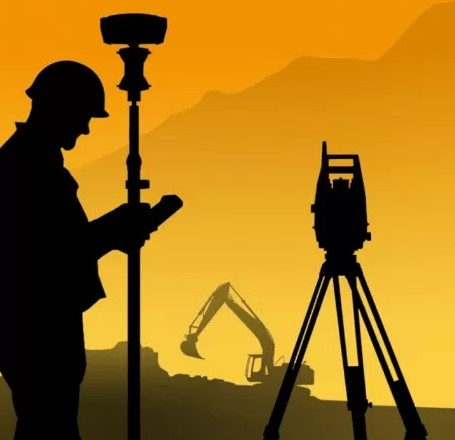
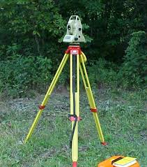
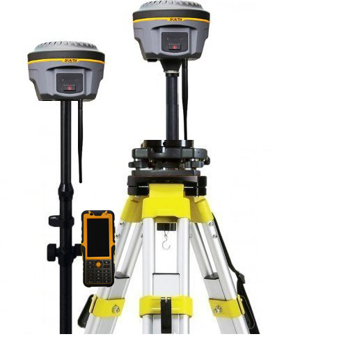
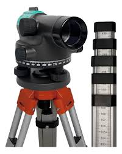
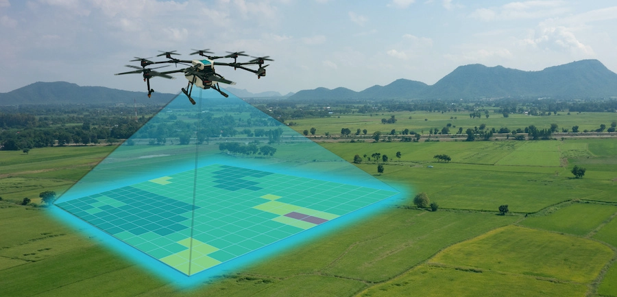
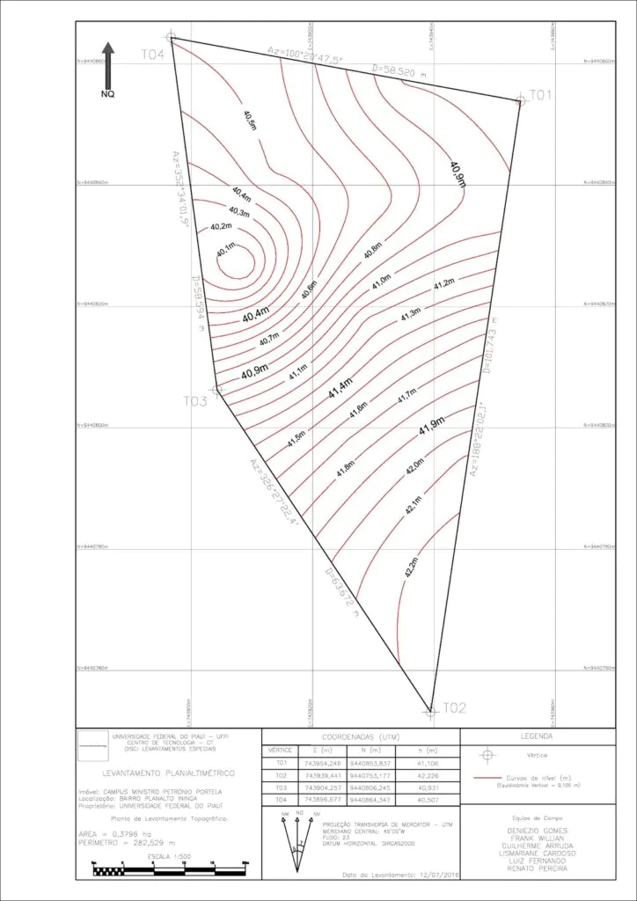
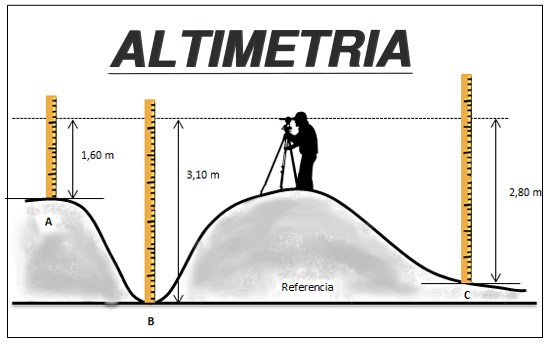

Levantamentos topográficos, georreferenciamento e locação de obra com precisão técnica
Antes de construir, parcelar, financiar ou regularizar um imóvel, é necessário conhecer com exatidão as divisas, declividade e localização do terreno no sistema geodésico oficial.
A FormiGeo oferece serviços completos de topografia auxiliando na melhor decisão em seu projeto.
Registro preciso das dimensões, limites, altimetria e características físicas do terreno.
Vinculação do imóvel ao Sistema Geodésico Brasileiro com coordenadas reconhecidas em cartório.
Implantação da construção exatamente no lugar previsto em projeto.
Levantamentos topográficos precisos para projetos de estradas, loteamentos, drenagem e infraestrutura urbana.
Fale com a equipe da FormiGeo e receba uma proposta para o seu terreno
Consulte o Especialista
A topografia é a ciência que estuda o relevo e as características da superfície terrestre, representando-as através de mapas e plantas topográficas.

Equipamento eletrônico que mede ângulos e distâncias com alta precisão, fundamental para levantamentos topográficos.

Sistema de posicionamento global com correção em tempo real, permitindo precisão centimétrica em levantamentos de grandes áreas.

Instrumento usado para determinar diferenças de altura entre pontos, essencial para nivelamento de terrenos.

Aeronave não tripulada equipada com câmeras e GPS, utilizada para levantamentos aéreos e geração de modelos 3D do terreno.

Parte da topografia que estuda as medidas e projeções horizontais do terreno, ignorando as variações de altitude.

Ramo da topografia que estuda as diferenças de nível e altitudes do terreno, complementando a planimetria.
+55 (41) 99187-5514
Atendimento via WhatsAppformigeo@gmail.com
Faça também via E-mailRua Clarice Lispector, 37 - Santa Terezinha - Pontal do Paraná
Tel: +55 (41) 99187-5514Segunda a Sexta: 8h às 18h
Sábado: 9h às 12h somente pelo WhatsApp
Domingo e feriados fechadosRua Clarice Lispector, 37 - Santa Terezinha - Pontal do Paraná
Paraná - PR - CEP 83255-000
Email: formigeo@gmail.com
© 2026 FormiGeo - Todos os direitos reservados
Ativar Windows ⚙️ Acesse Configurações para ativar o Windows.